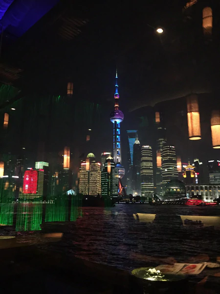

La historia detrás de nuestras ropa
Hoy, les traemos un relato de nuestro jefe de diseño y contenido, Miguel Angel Zúñiga, mejor conocido como “Micky”, quien, además, es cofundador de la marca, Micky, nos va a contar cómo es el proceso de creación de las ropas de baño.
Desde muy pequeño, me di cuenta, que tenía cierta obsesión con el color, con combinar cosas, armar, desarmar, dibujar, luego cuando descubrí el surfing, entré en un terreno complejo de diseño y estilo del cual me comencé lentamente a disfrutar. En mi época si no tenías una ropa de baño color fluorescente, estabas en nada. No soy diseñador de profesión, sin embargo, dirijo el departamento de diseño y contenido de Dunkelvolk, y dentro de las cosas que me toca hacer, me encargo de dar el input inicial como guía, para diseñar la colección de ropa de baños. Es algo que puede parecer complejo, y difícil, pero en mi caso, me resulta placentero, sobre todo porque no hay límites para esto, solo ideas base y luego ¡A volar!.
¿Cómo lo haces?
Esto no quiere decir que sea la manera regular, es un método mío, quizás otros creadores empiezan de otra manera, en mi caso me rijo por el número de ropas de baño que el departamento comercial requiere o necesita, pero digamos que me pide 18, yo presento diez más como para poder darles a ellos opciones. Una vez que tengo clara la cantidad a desarrollar, investigo sobre nuevas telas, colores y cortes, luego de eso me hago un moodboard de inspiración y ahí comienzo a dibujar.
Luego, estas ideas y dibujos se trasladan a una presentación, que funciona como herramienta para mi equipo de diseñadores, que son los que, a mi parecer, hacen el trabajo más duro, ya que tienen que confeccionar un documento muy claro y técnico para las fábricas que confeccionan las ropas de baños, generalmente, las fábricas que hacen ropas de baños están en Asia, en ese sentido, no podemos dejar cabos sueltos.
